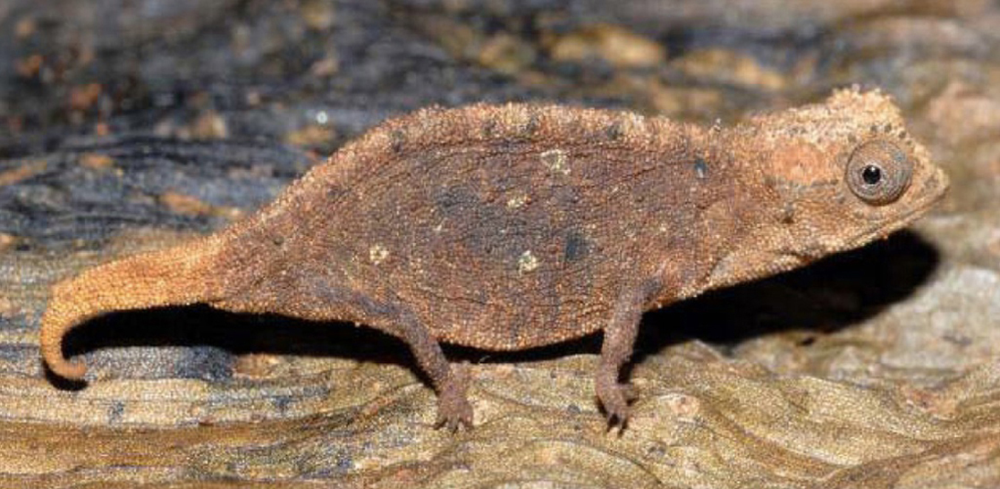
While we can easily identify dogs, lizards, fish, spiders, and worms as animals, other animals, such as corals and sponges, might be easily mistaken as plants or some other form of life. Yet scientists have recognized a set of common characteristics shared by all animals, including sponges, jellyfish, sea urchins, and humans.
The kingdom Animalia is a group of multicellular Eukarya. Animal evolution began in the ocean over 600 million years ago, with tiny creatures that probably do not resemble any living organism today. Since then, animals have evolved into a highly diverse kingdom. Although over one million currently living species of animals have been identified, scientists are continually discovering more species. The number of described living animal species is estimated to be about 1.4 million, and there may be as many as 6.8 million.
Understanding and classifying the variety of living species helps us to better understand how to conserve and benefit from this diversity. The animal classification system characterizes animals based on their anatomy, features of embryological development, and genetic makeup. Scientists are faced with the task of classifying animals within a system of taxonomy that reflects their evolutionary history. Additionally, they must identify traits that are common to all animals as well as traits that can be used to distinguish among related groups of animals. However, animals vary in the complexity of their organization and exhibit a huge diversity of body forms, so the classification scheme is constantly changing as new information about species is learned.
- 15.1 Features of the Animal Kingdom
- List the features that distinguish the animal kingdom from other kingdoms
- Explain the processes of animal reproduction and embryonic development
- Describe the hierarchy of basic animal classification
- Compare and contrast the embryonic development of protostomes and deuterostomes
- 15.2 Sponges and Cnidarians
- Describe the organizational features of the simplest animals
- Describe the organizational features of cnidarians
- 15.3 Flatworms, Nematodes, and Arthropods
- Describe the structure and systems of flatworms
- Describe the structural organization of nematodes
- Compare the internal systems and the appendage specialization of arthropods
- 15.4 Mollusks and Annelids
- Describe the unique anatomical features of mollusks
- Describe the features of an animal classified in phylum Annelida
- 15.5 Echinoderms and Chordates
- Describe the distinguishing characteristics of echinoderms
- Describe the distinguishing characteristics of chordates
- 15.6 Vertebrates
- Describe the distinguishing characteristics of vertebrates
- Identify the distinguishing characteristics of the major groups of vertebrates
| # | Lesson | Key Concepts | Source |
|---|---|---|---|
| 1 | Features of the Animal Kingdom | Animal characteristics (heterotrophic, multicellular, eukaryotic), body plans, tissue types, body symmetry (radial/bilateral), germ layers (diploblast/triploblast), coelom types, protostome vs. deuterostome development | CB 15.1 |
| 2 | Sponges and Cnidarians | Phylum Porifera (sponges, choanocytes, spongocoel), phylum Cnidaria (cnidocytes, nematocysts, polyp/medusa body forms), cnidarian diversity (Anthozoa, Scyphozoa, Cubozoa, Hydrozoa) | CB 15.2 |
| 3 | Flatworms, Nematodes, and Arthropods | Platyhelminthes (turbellarians, monogeneans, trematodes, cestodes), Nematoda (roundworms, cuticle, pseudocoelom), Arthropoda (exoskeleton, molting, Hexapoda, Myriapoda, Crustacea, Chelicerata) | CB 15.3 |
| 4 | Mollusks and Annelids | Phylum Mollusca (foot, visceral mass, mantle, radula), mollusk classes (gastropods, bivalves, cephalopods), phylum Annelida (segmentation, parapodia, clitellum) | CB 15.4 |
| 5 | Echinoderms and Chordates | Phylum Echinodermata (water vascular system, tube feet, pentaradial symmetry), phylum Chordata (notochord, dorsal hollow nerve cord, pharyngeal slits, post-anal tail) | CB 15.5 |
| 6 | Vertebrates | Vertebrate characteristics, fishes (jawless, cartilaginous, bony), amphibians, reptiles, birds, mammals | CB 15.6 |
| 7 | Practice Test | All topics — comprehensive assessment | All |
| Standard | Description | Lessons |
|---|---|---|
| BIO.8a | Classification of organisms using physical characteristics, body structures, and behavior | 1, 2, 3, 4, 5, 6 |
| BIO.8b | How evolution contributes to the diversity of life | 1, 2, 3, 4, 5, 6 |
| BIO.8c | Use of phylogenetic trees to show evolutionary relationships | 1, 5 |
- List the features that distinguish the animal kingdom from other kingdoms
- Explain the processes of animal reproduction and embryonic development
- Describe the hierarchy of basic animal classification
- Compare and contrast the embryonic development of protostomes and deuterostomes
Even though members of the animal kingdom are incredibly diverse, animals share common features that distinguish them from organisms in other kingdoms. All animals are eukaryotic, multicellular organisms, and almost all animals have specialized tissues. Most animals are motile, at least during certain life stages. Animals require a source of food to grow and develop. All animals are heterotrophic, ingesting living or dead organic matter. This form of obtaining energy distinguishes them from autotrophic organisms, such as most plants, which make their own nutrients through photosynthesis and from fungi that digest their food externally. Animals may be carnivores, herbivores, omnivores, or parasites (Figure 15.2). Most animals reproduce sexually: The offspring pass through a series of developmental stages that establish a determined body plan, unlike plants, for example, in which the exact shape of the body is indeterminate. The body plan refers to the shape of an animal.
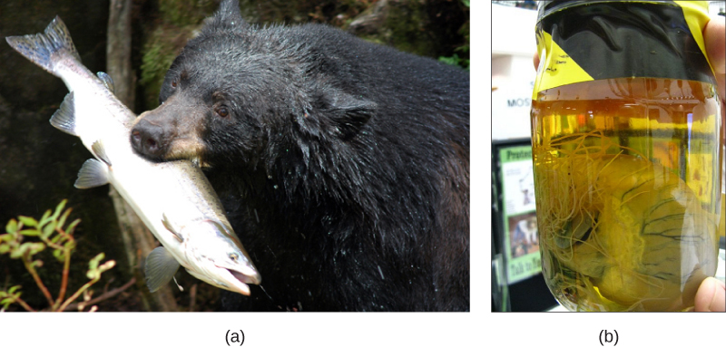
A hallmark trait of animals is specialized structures that are differentiated to perform unique functions. As multicellular organisms, most animals develop specialized cells that group together into tissues with specialized functions. A tissue is a collection of similar cells that had a common embryonic origin. There are four main types of animal tissues: nervous, muscle, connective, and epithelial. Nervous tissue contains neurons, or nerve cells, which transmit nerve impulses. Muscle tissue contracts to cause all types of body movement from locomotion of the organism to movements within the body itself. Animals also have specialized connective tissues that provide many functions, including transport and structural support. Examples of connective tissues include blood and bone. Connective tissue is comprised of cells separated by extracellular material made of organic and inorganic materials, such as the protein and mineral deposits of bone. Epithelial tissue covers the internal and external surfaces of organs inside the animal body and the external surface of the body of the organism.
Most animals have diploid body (somatic) cells and a small number of haploid reproductive (gamete) cells produced through meiosis. Some exceptions exist: For example, in bees, wasps, and ants, the male is haploid because it develops from an unfertilized egg. Most animals undergo sexual reproduction, while many also have mechanisms of asexual reproduction.
Almost all animal species are capable of reproducing sexually; for many, this is the only mode of reproduction possible. This distinguishes animals from fungi, protists, and bacteria, where asexual reproduction is common or exclusive. During sexual reproduction, the male and female gametes of a species combine in a process called fertilization. Typically, the small, motile male sperm travels to the much larger, sessile female egg. Sperm form is diverse and includes cells with flagella or amoeboid cells to facilitate motility. Fertilization and fusion of the gamete nuclei produce a zygote. Fertilization may be internal, especially in land animals, or external, as is common in many aquatic species.
After fertilization, a developmental sequence ensues as cells divide and differentiate. Many of the events in development are shared in groups of related animal species, and these events are one of the main ways scientists classify high-level groups of animals. During development, animal cells specialize and form tissues, determining their future morphology and physiology. In many animals, such as mammals, the young resemble the adult. Other animals, such as some insects and amphibians, undergo complete metamorphosis in which individuals enter one or more larval stages. For these animals, the young and the adult have different diets and sometimes habitats. In other species, a process of incomplete metamorphosis occurs in which the young somewhat resemble the adults and go through a series of stages separated by molts (shedding of the skin) until they reach the final adult form.
Asexual reproduction, unlike sexual reproduction, produces offspring genetically identical to each other and to the parent. A number of animal species—especially those without backbones, but even some fish, amphibians, and reptiles—are capable of asexual reproduction. Asexual reproduction, except for occasional identical twinning, is absent in birds and mammals. The most common forms of asexual reproduction for stationary aquatic animals include budding and fragmentation, in which part of a parent individual can separate and grow into a new individual. In contrast, a form of asexual reproduction found in certain invertebrates and rare vertebrates is called parthenogenesis (or "virgin beginning"), in which unfertilized eggs develop into new offspring.
Animals are classified according to morphological and developmental characteristics, such as a body plan. With the exception of sponges, the animal body plan is symmetrical. This means that their distribution of body parts is balanced along an axis. Additional characteristics that contribute to animal classification include the number of tissue layers formed during development, the presence or absence of an internal body cavity, and other features of embryological development.
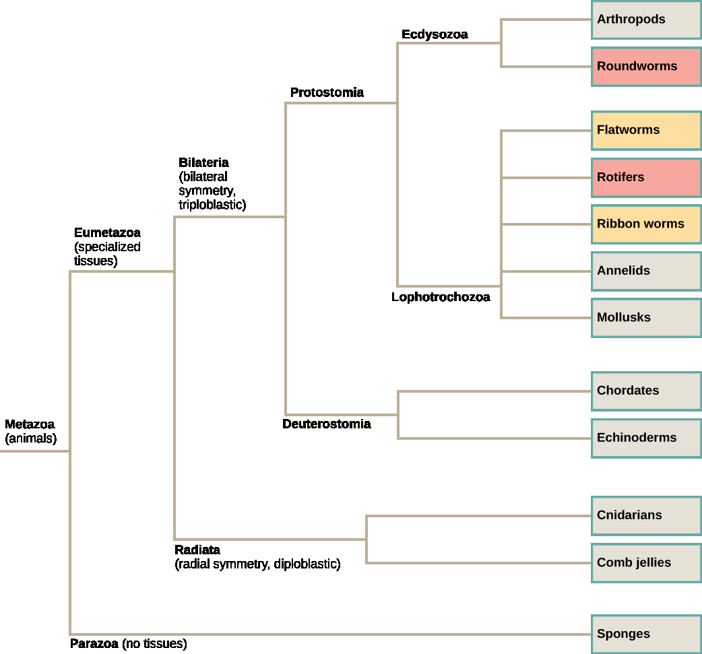
Which of the following statements is false? a. Eumetazoa have specialized tissues and Parazoa do not. b. Both acoelomates and pseudocoelomates have a body cavity. c. Chordates are more closely related to echinoderms than to rotifers according to the figure. d. Some animals have radial symmetry, and some animals have bilateral symmetry.
Animals may be asymmetrical, radial, or bilateral in form (Figure 15.4). Asymmetrical animals are animals with no pattern or symmetry; an example of an asymmetrical animal is a sponge (Figure 15.4a). An organism with radial symmetry (Figure 15.4b) has a longitudinal (up-and-down) orientation: Any plane cut along this up–down axis produces roughly mirror-image halves. An example of an organism with radial symmetry is a sea anemone.
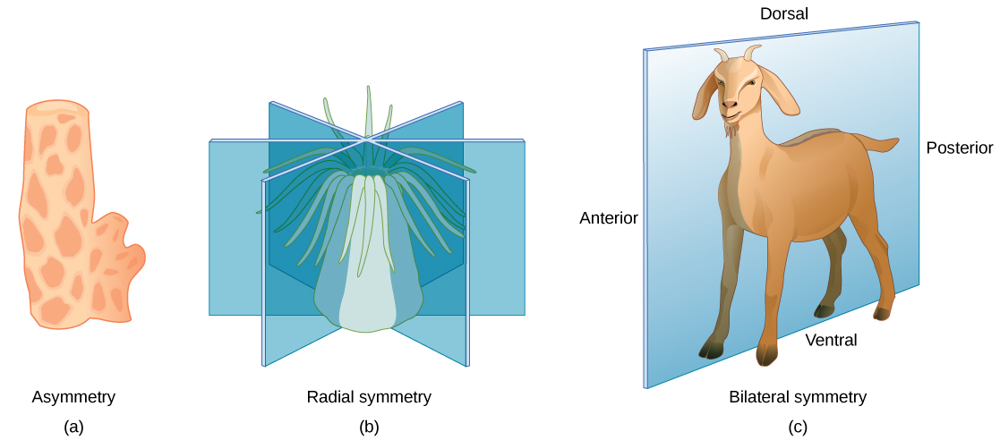
Bilateral symmetry is illustrated in Figure 15.4c using a goat. The goat also has upper and lower sides to it, but they are not symmetrical. A vertical plane cut from front to back separates the animal into roughly mirror-image right and left sides. Animals with bilateral symmetry also have a "head" and "tail" (anterior versus posterior) and a back and underside (dorsal versus ventral).
Most animal species undergo a layering of early tissues during embryonic development. These layers are called germ layers. Each layer develops into a specific set of tissues and organs. Animals develop either two or three embryonic germs layers (Figure 15.5). The animals that display radial symmetry develop two germ layers, an inner layer (endoderm) and an outer layer (ectoderm). These animals are called diploblasts. Animals with bilateral symmetry develop three germ layers: an inner layer (endoderm), an outer layer (ectoderm), and a middle layer (mesoderm). Animals with three germ layers are called triploblasts.
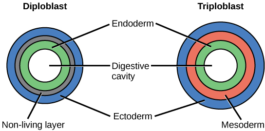
Triploblasts may develop an internal body cavity derived from mesoderm, called a coelom (pr. see-LOM). This epithelial-lined cavity is a space, usually filled with fluid, which lies between the digestive system and the body wall. It houses organs such as the kidneys and spleen, and contains the circulatory system. Triploblasts that do not develop a coelom are called acoelomates, and their mesoderm region is completely filled with tissue, although they have a gut cavity. Examples of acoelomates include the flatworms. Animals with a true coelom are called eucoelomates (or coelomates) (Figure 15.6). A true coelom arises entirely within the mesoderm germ layer. Animals such as earthworms, snails, insects, starfish, and vertebrates are all eucoelomates. A third group of triploblasts has a body cavity that is derived partly from mesoderm and partly from endoderm tissue. These animals are called pseudocoelomates. Roundworms are examples of pseudocoelomates. New data on the relationships of pseudocoelomates suggest that these phyla are not closely related and so the evolution of the pseudocoelom must have occurred more than once (Figure 15.3). True coelomates can be further characterized based on features of their early embryological development.
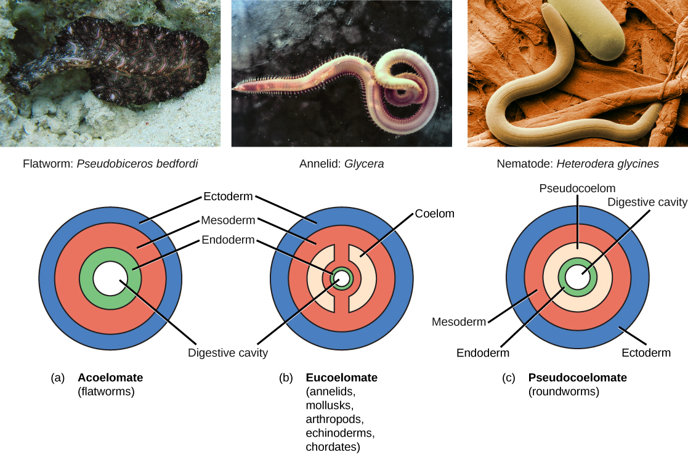
Bilaterally symmetrical, triploblastic eucoelomates can be divided into two groups based on differences in their early embryonic development. Protostomes include phyla such as arthropods, mollusks, and annelids. Deuterostomes include the chordates and echinoderms. These two groups are named from which opening of the digestive cavity develops first: mouth or anus. The word protostome comes from Greek words meaning "mouth first," and deuterostome originates from words meaning "mouth second" (in this case, the anus develops first). This difference reflects the fate of a structure called the blastopore (Figure 15.7), which becomes the mouth in protostomes and the anus in deuterostomes. Other developmental characteristics differ between protostomes and deuterostomes, including the mode of formation of the coelom and the early cell division of the embryo.
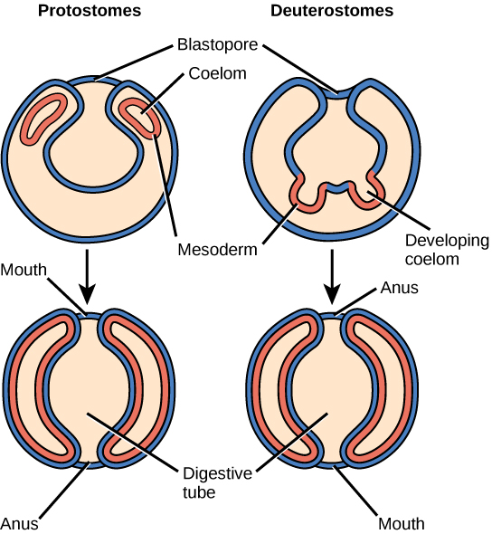
Describe the key features shared by all animals. Then explain the differences between diploblasts and triploblasts, and compare acoelomates, pseudocoelomates, and eucoelomates. Finally, distinguish between protostome and deuterostome development.
- Describe the organizational features of the simplest animals
- Describe the organizational features of cnidarians
The kingdom of animals is informally divided into invertebrate animals, those without a backbone, and vertebrate animals, those with a backbone. Although in general we are most familiar with vertebrate animals, the vast majority of animal species, about 95 percent, are invertebrates. Invertebrates include a huge diversity of animals, millions of species in about 32 phyla, which we can just begin to touch on here.
The sponges and the cnidarians represent the simplest of animals. Sponges appear to represent an early stage of multicellularity in the animal clade. Although they have specialized cells for particular functions, they lack true tissues in which specialized cells are organized into functional groups. Sponges are similar to what might have been the ancestor of animals: colonial, flagellated protists. The cnidarians, or the jellyfish and their kin, are the simplest animal group that displays true tissues, although they possess only two tissue layers.
Animals in subkingdom Parazoa represent the simplest animals and include the sponges, or phylum Porifera (Figure 15.8). All sponges are aquatic and the majority of species are marine. Sponges live in intimate contact with water, which plays a role in their feeding, gas exchange, and excretion. Much of the body structure of the sponge is dedicated to moving water through the body so it can filter out food, absorb dissolved oxygen, and eliminate wastes.
The body of the simplest sponges takes the shape of a cylinder with a large central cavity, the spongocoel. Water enters the spongocoel from numerous pores in the body wall. Water flows out through a large opening called the osculum (Figure 15.9). However, sponges exhibit a diversity of body forms, which vary in the size and branching of the spongocoel, the number of osculi, and where the cells that filter food from the water are located.
Sponges consist of an outer layer of flattened cells and an inner layer of cells called choanocytes separated by a jelly-like substance called mesohyl. The mesohyl contains embedded amoeboid cells that secrete tiny needles called spicules or protein fibers that help give the sponge its structural strength. The cell body of the choanocyte is embedded in mesohyl but protruding into the spongocoel is a mesh-like collar surrounding a single flagellum. The beating of flagella from all choanocytes moves water through the sponge. Food particles are trapped in mucus produced by the sieve-like collar of the choanocytes and are ingested by phagocytosis. This process is called intracellular digestion. Amoebocytes take up nutrients repackaged in food vacuoles of the choanocytes and deliver them to other cells within the sponge.
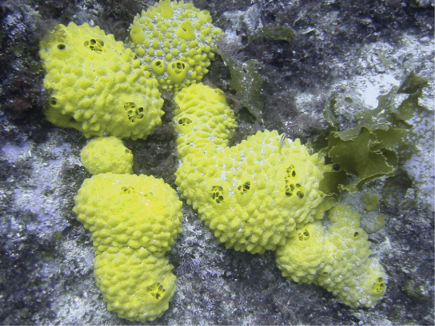
Despite their lack of complexity, sponges are clearly successful organisms, having persisted on Earth for more than half a billion years. Lacking a true digestive system, sponges depend on the intracellular digestive processes of their choanocytes for their energy intake. The limit of this type of digestion is that food particles must be smaller than individual cells. Gas exchange, circulation, and excretion occur by diffusion between cells and the water.
Sponges reproduce both sexually and asexually. Asexual reproduction is either by fragmentation (in which a piece of the sponge breaks off and develops into a new individual), or budding (an outgrowth from the parent that eventually detaches). A type of asexual reproduction found only in freshwater sponges occurs through the formation of gemmules, clusters of cells surrounded by a tough outer layer. Gemmules survive hostile environments and can attach to a substrate and grow into a new sponge.
Sponges are monoecious (or hermaphroditic), meaning one individual can produce both eggs and sperm. Sponges may be sequentially hermaphroditic, producing eggs first and sperm later. Eggs arise from amoebocytes and are retained within the spongocoel, whereas sperm arise from choanocytes and are ejected through the osculum. Sperm carried by water currents fertilize the eggs of other sponges. Early larval development occurs within the sponge, and free-swimming larvae are then released through the osculum. This is the only time that sponges exhibit mobility. Sponges are sessile as adults and spend their lives attached to a fixed substrate.
The phylum Cnidaria includes animals that show radial or biradial symmetry and are diploblastic. Nearly all (about 99 percent) cnidarians are marine species. Cnidarians have specialized cells known as cnidocytes ("stinging cells") containing organelles called nematocysts. These cells are concentrated around the mouth and tentacles of the animal and can immobilize prey with toxins. Nematocysts contain coiled threads that may bear barbs. The outer wall of the cell has a hairlike projection that is sensitive to touch. When touched, the cells fire the toxin-containing coiled threads that can penetrate and stun the predator or prey (see Figure 15.10).
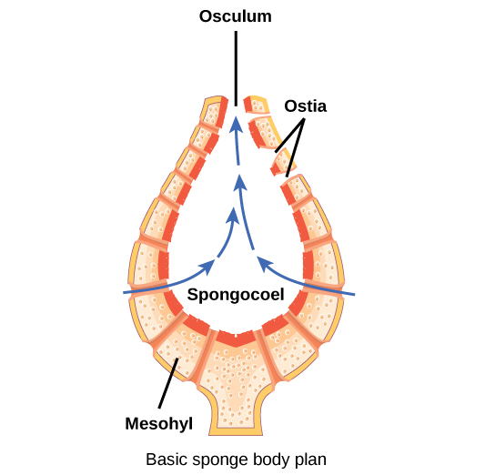
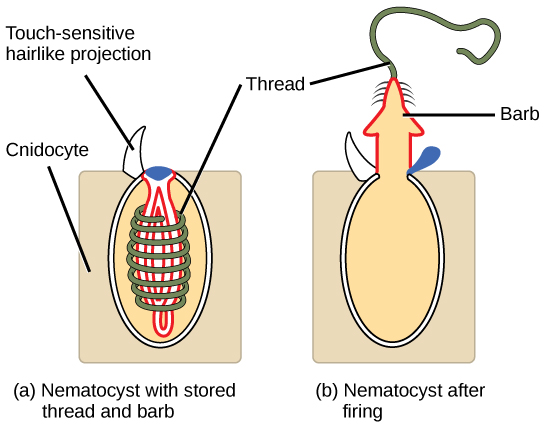
Cnidarians display two distinct body plans: polyp or "stalk" and medusa or "bell" (Figure 15.11). Examples of the polyp form are freshwater species of the genus Hydra; perhaps the best-known medusoid animals are the jellies (jellyfish). Polyps are sessile as adults, with a single opening to the digestive system (the mouth) facing up with tentacles surrounding it. Medusae are motile, with the mouth and tentacles hanging from the bell-shaped body. In other cnidarians, both a polyp and medusa form exist, and the life cycle alternates between these forms.
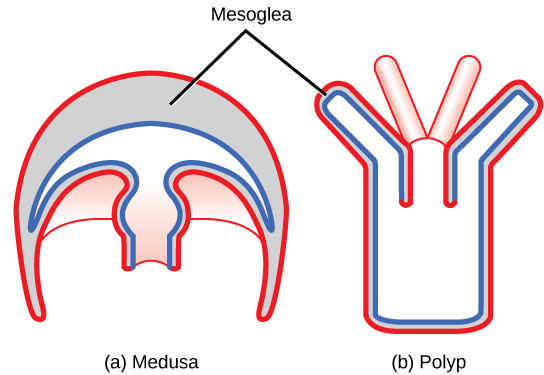
All cnidarians have two tissue layers. The outer layer is called the epidermis, whereas the inner layer is called the gastrodermis and lines the digestive cavity. Between these two layers is a non-living, jelly-like mesoglea. There are differentiated cell types in each tissue layer, such as nerve cells, enzyme-secreting cells, and nutrient-absorbing cells, as well as intercellular connections between the cells. However, organs and organ systems are not present in this phylum.
The nervous system is primitive, with nerve cells scattered across the body in a network. The function of the nerve cells is to carry signals from sensory cells and to contractile cells. Groups of cells in the nerve net form nerve cords that may be essential for more rapid transmission. Cnidarians perform extracellular digestion, with digestion completed by intracellular digestive processes. Food is taken into the gastrovascular cavity, enzymes are secreted into the cavity, and the cells lining the cavity absorb the nutrient products of the extracellular digestive process. The gastrovascular cavity has only one opening that serves as both a mouth and an anus (an incomplete digestive system). Like the sponges, Cnidarian cells exchange oxygen, carbon dioxide, and nitrogenous wastes by diffusion between cells in the epidermis and gastrodermis with water.
The phylum Cnidaria contains about 10,000 described species divided into four classes: Anthozoa, Scyphozoa, Cubozoa, and Hydrozoa.
The class Anthozoa includes all cnidarians that exhibit a sessile polyp body plan only; in other words, there is no medusa stage within their life cycle. Examples include sea anemones, sea pens, and corals, with an estimated number of 6,100 described species. Sea anemones are usually brightly colored and can attain a size of 1.8 to 10 cm in diameter. These animals are usually cylindrical in shape and are attached to a substrate. A mouth opening is surrounded by tentacles bearing cnidocytes (Figure 15.12).
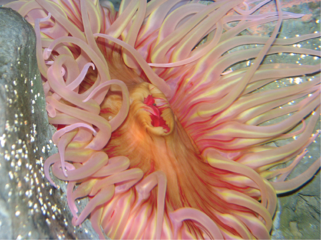
Scyphozoans include all the jellies and are motile and exclusively marine with about 200 described species. The medusa is the dominant stage in the life cycle, although there is also a polyp stage. Species range from 2 cm in length to the largest scyphozoan species, Cyanea capillata, at 2 m across. Jellies display a characteristic bell-like body shape (Figure 15.13).
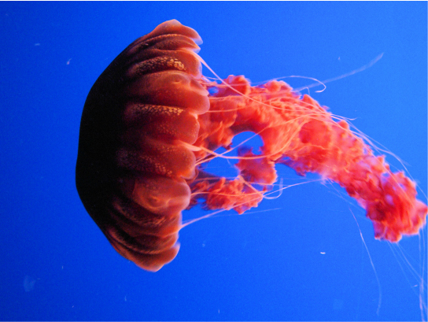
The class Cubozoa includes jellies that are square in cross-section and so are known as "box jellyfish." These species may achieve sizes of 15–25 cm. Cubozoans are anatomically similar to the jellyfish. A prominent difference between the two classes is the arrangement of tentacles. Cubozoans have muscular pads called pedalia at the corners of the square bell canopy, with one or more tentacles attached to each pedalium. In some cases, the digestive system may extend into the pedalia. Cubozoans typically exist in a polyp form that develops from a larva. The polyps may bud to form more polyps and then transform into the medusoid forms.
Hydrozoa includes nearly 3,500 species, most of which are marine. Most species in this class have both polyp and medusa forms in their life cycle. Many hydrozoans form colonies composed of branches of specialized polyps that share a gastrovascular cavity. Colonies may also be free-floating and contain both medusa and polyp individuals in the colony, as in the Portuguese Man O'War (Physalia) or By-the-Wind Sailor (Velella). Other species are solitary polyps or solitary medusae. The characteristic shared by all of these species is that their gonads are derived from epidermal tissue, whereas in all other cnidarians, they are derived from gastrodermal tissue (Figure 15.14ab).
Describe how sponges feed using choanocytes and intracellular digestion. Then compare the two cnidarian body forms (polyp and medusa) and explain the role of cnidocytes and nematocysts in prey capture. Finally, name and briefly describe the four classes of Cnidaria.
- Describe the structure and systems of flatworms
- Describe the structural organization of nematodes
- Compare the internal systems and the appendage specialization of arthropods
The animal phyla of this and subsequent modules are triploblastic and have an embryonic mesoderm sandwiched between the ectoderm and endoderm. These phyla are also bilaterally symmetrical, meaning that a longitudinal section will divide them into right and left sides that are mirror images of each other. Associated with bilateralism is the beginning of cephalization, the evolution of a concentration of nervous tissues and sensory organs in the head of the organism, which is where the organism first encounters its environment.
The flatworms are acoelomate organisms that include free-living and parasitic forms. The nematodes, or roundworms, possess a pseudocoelom and consist of both free-living and parasitic forms. Finally, the arthropods, one of the most successful taxonomic groups on the planet, are coelomate organisms with a hard exoskeleton and jointed appendages. The nematodes and the arthropods belong to a clade with a common ancestor, called Ecdysozoa. The name comes from the word ecdysis, which refers to the periodic shedding, or molting, of the exoskeleton. The ecdysozoan phyla have a hard cuticle covering their bodies that must be periodically shed and replaced for them to increase in size.
The relationships among flatworms, or phylum Platyhelminthes, is being revised and the description here will follow the traditional groupings. Most flatworms are parasitic, including important parasites of humans. Flatworms have three embryonic germ layers that give rise to surfaces covering tissues, internal tissues, and the lining of the digestive system. The epidermal tissue is a single layer of cells or a layer of fused cells covering a layer of circular muscle above a layer of longitudinal muscle. The mesodermal tissues include support cells and secretory cells that secrete mucus and other materials to the surface. The flatworms are acoelomate, so their bodies contain no cavities or spaces between the outer surface and the inner digestive tract.
Free-living species of flatworms are predators or scavengers, whereas parasitic forms feed from the tissues of their hosts. Most flatworms have an incomplete digestive system with an opening, the "mouth," that is also used to expel digestive system wastes. Some species also have an anal opening. The gut may be a simple sac or highly branched. Digestion is extracellular, with enzymes secreted into the space by cells lining the tract, and digested materials taken into the same cells by phagocytosis. One group, the cestodes, does not have a digestive system, because their parasitic lifestyle and the environment in which they live (suspended within the digestive cavity of their host) allows them to absorb nutrients directly across their body wall. Flatworms have an excretory system with a network of tubules throughout the body that open to the environment and nearby flame cells, whose cilia beat to direct waste fluids concentrated in the tubules out of the body. The system is responsible for regulation of dissolved salts and excretion of nitrogenous wastes. The nervous system consists of a pair of nerve cords running the length of the body with connections between them and a large ganglion or concentration of nerve cells at the anterior end of the worm; here, there may also be a concentration of photosensory and chemosensory cells (Figure 15.15).
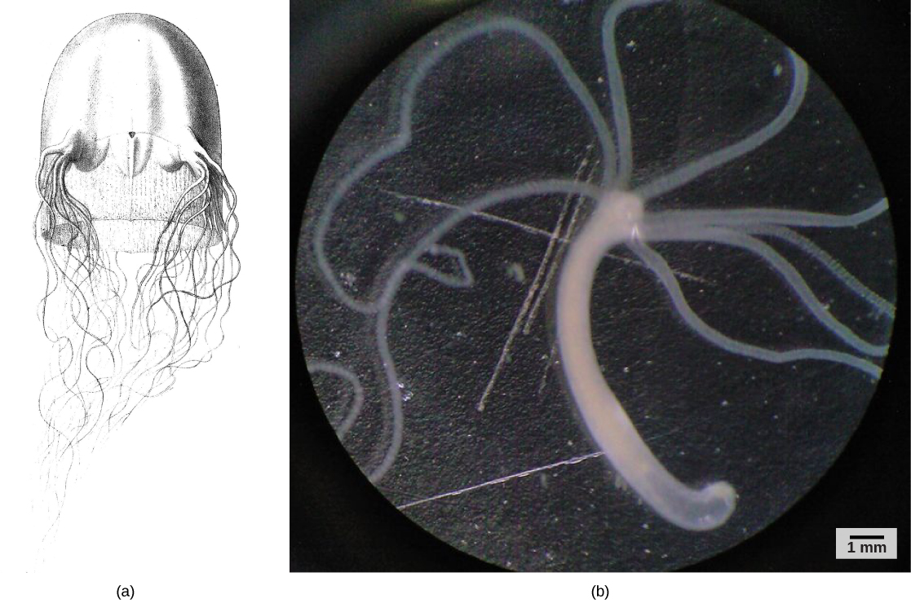
Since there is no circulatory or respiratory system, gas and nutrient exchange is dependent on diffusion and intercellular junctions. This necessarily limits the thickness of the body in these organisms, constraining them to be "flat" worms. Most flatworm species are monoecious (hermaphroditic, possessing both sets of sex organs), and fertilization is typically internal. Asexual reproduction is common in some groups in which an entire organism can be regenerated from just a part of itself.
Flatworms are traditionally divided into four classes: Turbellaria, Monogenea, Trematoda, and Cestoda (Figure 15.16). The turbellarians include mainly free-living marine species, although some species live in freshwater or moist terrestrial environments. The simple planarians found in freshwater ponds and aquaria are examples. The epidermal layer of the underside of turbellarians is ciliated, and this helps them move. Some turbellarians are capable of remarkable feats of regeneration in which they may regrow the body, even from a small fragment.

The monogeneans are external parasites mostly of fish with life cycles consisting of a free-swimming larva that attaches to a fish to begin transformation to the parasitic adult form. They have only one host during their life, typically of just one species. The worms may produce enzymes that digest the host tissues or graze on surface mucus and skin particles. Most monogeneans are hermaphroditic, but the sperm develop first, and it is typical for them to mate between individuals and not to self-fertilize.
The trematodes, or flukes, are internal parasites of mollusks and many other groups, including humans. Trematodes have complex life cycles that involve a primary host in which sexual reproduction occurs and one or more secondary hosts in which asexual reproduction occurs. The primary host is almost always a mollusk. Trematodes are responsible for serious human diseases including schistosomiasis, caused by a blood fluke (Schistosoma). The disease infects an estimated 200 million people in the tropics and leads to organ damage and chronic symptoms including fatigue. Infection occurs when a human enters the water, and a larva, released from the primary snail host, locates and penetrates the skin. The parasite infects various organs in the body and feeds on red blood cells before reproducing. Many of the eggs are released in feces and find their way into a waterway where they are able to reinfect the primary snail host.
The cestodes, or tapeworms, are also internal parasites, mainly of vertebrates. Tapeworms live in the intestinal tract of the primary host and remain fixed using a sucker on the anterior end, or scolex, of the tapeworm body. The remaining body of the tapeworm is made up of a long series of units called proglottids, each of which may contain an excretory system with flame cells, but will contain reproductive structures, both male and female. Tapeworms do not have a digestive system, they absorb nutrients from the food matter passing them in the host's intestine. Proglottids are produced at the scolex and are pushed to the end of the tapeworm as new proglottids form, at which point, they are "mature" and all structures except fertilized eggs have degenerated. Most reproduction occurs by cross-fertilization. The proglottid detaches and is released in the feces of the host. The fertilized eggs are eaten by an intermediate host. The juvenile worms emerge and infect the intermediate host, taking up residence, usually in muscle tissue. When the muscle tissue is eaten by the primary host, the cycle is completed. There are several tapeworm parasites of humans that are acquired by eating uncooked or poorly cooked pork, beef, and fish.
The phylum Nematoda, or roundworms, includes more than 28,000 species with an estimated 16,000 parasitic species. The name Nematoda is derived from the Greek word "nemos," which means "thread." Nematodes are present in all habitats and are extremely common, although they are usually not visible (Figure 15.17).

Most nematodes look similar to each other: slender tubes, tapered at each end (Figure 15.17). Nematodes are pseudocoelomates and have a complete digestive system with a distinct mouth and anus.
The nematode body is encased in a cuticle, a flexible but tough exoskeleton, or external skeleton, which offers protection and support. The cuticle contains a carbohydrate-protein polymer called chitin. The cuticle also lines the pharynx and rectum. Although the exoskeleton provides protection, it restricts growth, and therefore must be continually shed and replaced as the animal increases in size.
A nematode's mouth opens at the anterior end with three or six lips and, in some species, teeth in the form of cuticular extensions. There may also be a sharp stylet that can protrude from the mouth to stab prey or pierce plant or animal cells. The mouth leads to a muscular pharynx and intestine, leading to the rectum and anal opening at the posterior end.
In nematodes, the excretory system is not specialized. Nitrogenous wastes are removed by diffusion. In marine nematodes, regulation of water and salt is achieved by specialized glands that remove unwanted ions while maintaining internal body fluid concentrations.
Most nematodes have four nerve cords that run along the length of the body on the top, bottom, and sides. The nerve cords fuse in a ring around the pharynx, to form a head ganglion or "brain" of the worm, as well as at the posterior end to form the tail ganglion. Beneath the epidermis lies a layer of longitudinal muscles that permits only side-to-side, wave-like undulation of the body.
Nematodes employ a diversity of sexual reproductive strategies depending on the species; they may be monoecious, dioecious (separate sexes), or may reproduce asexually by parthenogenesis. Caenorhabditis elegans is nearly unique among animals in having both self-fertilizing hermaphrodites and a male sex that can mate with the hermaphrodite.
The name "arthropoda" means "jointed legs," which aptly describes each of the enormous number of species belonging to this phylum. Arthropoda dominate the animal kingdom with an estimated 85 percent of known species, with many still undiscovered or undescribed. The principal characteristics of all the animals in this phylum are functional segmentation of the body and the presence of jointed appendages (Figure 15.18). As members of Ecdysozoa, arthropods also have an exoskeleton made principally of chitin. Arthropoda is the largest phylum in the animal world in terms of numbers of species, and insects form the single largest group within this phylum. Arthropods are true coelomate animals and exhibit prostostomic development.

A unique feature of arthropods is the presence of a segmented body with fusion of certain sets of segments to give rise to functional segments. Fused segments may form a head, thorax, and abdomen, or a cephalothorax and abdomen, or a head and trunk. The coelom takes the form of a hemocoel (or blood cavity). The open circulatory system, in which blood bathes the internal organs rather than circulating in vessels, is regulated by a two-chambered heart. Respiratory systems vary, depending on the group of arthropod: Insects and myriapods use a series of tubes (tracheae) that branch throughout the body, open to the outside through openings called spiracles, and perform gas exchange directly between the cells and air in the tracheae. Aquatic crustaceans use gills, arachnids employ "book lungs," and aquatic chelicerates use "book gills." The book lungs of arachnids are internal stacks of alternating air pockets and hemocoel tissue shaped like the pages of a book. The book gills of crustaceans are external structures similar to book lungs with stacks of leaf-like structures that exchange gases with the surrounding water (Figure 15.19).

Phylum Arthropoda includes animals that have been successful in colonizing terrestrial, aquatic, and aerial habitats. The phylum is further classified into five subphyla: Trilobitomorpha (trilobites), Hexapoda (insects and relatives), Myriapoda (millipedes, centipedes, and relatives), Crustacea (crabs, lobsters, crayfish, isopods, barnacles, and some zooplankton), and Chelicerata (horseshoe crabs, arachnids, scorpions, and daddy longlegs). Trilobites are an extinct group of arthropods found from the Cambrian period (540–490 million years ago) until they became extinct in the Permian (300–251 million years ago) that are probably most closely related to the Chelicerata. The 17,000 described species have been identified from fossils (Figure 15.18).
The Hexapoda have six legs (three pairs) as their name suggests. Hexapod segments are fused into a head, thorax, and abdomen (Figure 15.20). The thorax bears the wings and three pairs of legs. The insects we encounter on a daily basis—such as ants, cockroaches, butterflies, and bees—are examples of Hexapoda.

Subphylum Myriapoda includes arthropods with legs that may vary in number from 10 to 750. This subphylum includes 13,000 species; the most commonly found examples are millipedes and centipedes. All myriapods are terrestrial animals and prefer a humid environment (Figure 15.21).

Crustaceans, such as shrimp, lobsters, crabs, and crayfish, are the dominant aquatic arthropods. A few crustaceans are terrestrial species like the pill bugs or sow bugs. The number of described crustacean species stands at about 47,000.
Although the basic body plan in crustaceans is similar to the Hexapoda—head, thorax, and abdomen—the head and thorax may be fused in some species to form a cephalothorax, which is covered by a plate called the carapace (Figure 15.22). The exoskeleton of many species is also infused with calcium carbonate, which makes it even stronger than in other arthropods. Crustaceans have an open circulatory system in which blood is pumped into the hemocoel by the dorsal heart. Most crustaceans typically have separate sexes, but some, like barnacles, may be hermaphroditic. Serial hermaphroditism, in which the gonad can switch from producing sperm to ova, is also found in some crustacean species. Larval stages are seen in the early development of many crustaceans. Most crustaceans are carnivorous, but detritivores and filter feeders are also common.

Subphylum Chelicerata includes animals such as spiders, scorpions, horseshoe crabs, and sea spiders. This subphylum is predominantly terrestrial, although some marine species also exist. An estimated 103,000 described species are included in subphylum Chelicerata.
The body of chelicerates may be divided into two parts and a distinct "head" is not always discernible. The phylum derives its name from the first pair of appendages: the chelicerae (Figure 15.23a), which are specialized mouthparts. The chelicerae are mostly used for feeding, but in spiders, they are typically modified to inject venom into their prey (Figure 15.23b). As in other members of Arthropoda, chelicerates also utilize an open circulatory system, with a tube-like heart that pumps blood into the large hemocoel that bathes the internal organs. Aquatic chelicerates utilize gill respiration, whereas terrestrial species use either tracheae or book lungs for gaseous exchange.

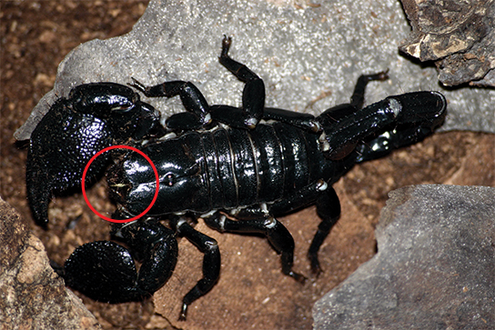
Compare the body cavity types of flatworms (acoelomate), nematodes (pseudocoelomate), and arthropods (coelomate). Describe the four classes of flatworms and their lifestyles. Then explain the key characteristics of arthropods and name their five subphyla with an example of each.
- Describe the unique anatomical features of mollusks
- Describe the features of an animal classified in phylum Annelida
The mollusks are a diverse group (85,000 described species) of mostly marine species. They have a variety of forms, ranging from large predatory squid and octopus, some of which show a high degree of intelligence, to small grazing forms with elaborately sculpted and colored shells. The annelids traditionally include the oligochaetes, which include the earthworms and leeches, the polychaetes, which are a marine group, and two other smaller classes.
The phyla Mollusca and Annelida belong to a clade called the Lophotrochozoa, which also includes the phylum Nemertea, or ribbon worms (Figure 15.3). They are distinct from the Ecdysozoa (nematodes and arthropods) based on evidence from analysis of their DNA, which has changed our views of the relationships among invertebrates.
Mollusca is the predominant phylum in marine environments, where it is estimated that 23 percent of all known marine species belong to this phylum. It is the second most diverse phylum of animals with over 75,000 described species. The name "mollusca" signifies a soft body, as the earliest descriptions of mollusks came from observations of unshelled, soft-bodied cuttlefish (squid relatives). Although mollusk body forms vary, they share key characteristics, such as a ventral, muscular foot that is typically used for locomotion; the visceral mass, which contains most of the internal organs of the animal; and a dorsal mantle, which is a flap of tissue over the visceral mass that creates a space called the mantle cavity. The mantle may or may not secrete a shell of calcium carbonate. In addition, many mollusks have a scraping structure at the mouth, called a radula (Figure 15.24).
The muscular foot varies in shape and function, depending on the type of mollusk (described below in the section on mollusk diversity). It is a retractable as well as extendable organ, used for locomotion and anchorage. Mollusks are eucoelomates, but the coelomic cavity is restricted to a cavity around the heart in adult animals. The mantle cavity, formed inside the mantle, develops independently of the coelomic cavity. It is a multi-purpose space, housing the gills, the anus, organs for sensing food particles in the water, and an outlet for gametes. Most mollusks have an open circulatory system with a heart that circulates the hemolymph in open spaces around the organs. The octopuses and squid are an exception to this and have a closed circulatory system with two hearts that move blood through the gills and a third, systemic heart that pumps blood through the rest of the body.
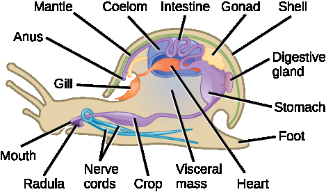
Which of the following statements about the anatomy of a mollusk is false?
a. Mollusks have a radula for scraping food.
b. Mollusks have ventral nerve cords.
c. The tissue beneath the shell is called the mantle.
d. The mantle cavity contains hemolymph.
This phylum is comprised of seven classes: Aplacophora, Monoplacophora, Polyplacophora, Bivalvia, Gastropoda, Cephalopoda, and Scaphopoda.
Class Aplacophora ("bearing no plates") includes worm-like animals living mostly on deep ocean bottoms. These animals lack a shell but have aragonite spicules on their skin. Members of class Monoplacophora ("bearing one plate") have a single, cap-like shell enclosing the body. The monoplacophorans were believed extinct and only known as fossils until the discovery of Neopilina galatheae in 1952. Today, scientists have identified nearly two dozen living species.
Animals in the class Polyplacophora ("bearing many plates") are commonly known as "chitons" and bear an armor-like, eight-plated shell (Figure 15.25). These animals have a broad, ventral foot that is adapted for attachment to rocks and a mantle that extends beyond the shell in the form of a girdle. They breathe with ctenidia (gills) present ventrally. These animals have a radula modified for scraping. A single pair of nephridia for excretion is present.
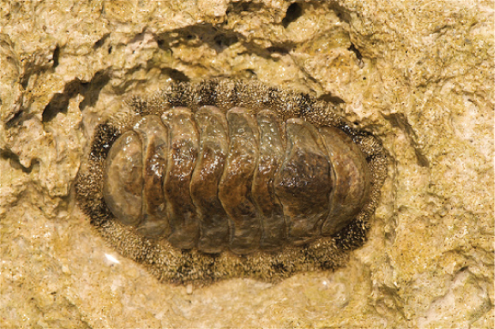
Class Bivalvia ("two shells") includes clams, oysters, mussels, scallops, and geoducks. They are found in marine and freshwater habitats. As the name suggests, bivalves are enclosed in a pair of shells (or valves) that are hinged at the dorsal side. The body is flattened on the sides. They feed by filtering particles from water and a radula is absent. They exchange gases using a pair of ctenidia, and excretion and osmoregulation are carried out by a pair of nephridia. In some species, the posterior edges of the mantle may fuse to form two siphons that inhale and exhale water. Some bivalves like oysters and mussels have the unique ability to secrete and deposit a calcareous nacre or "mother of pearl" around foreign particles that enter the mantle cavity. This property is commercially exploited to produce pearls.
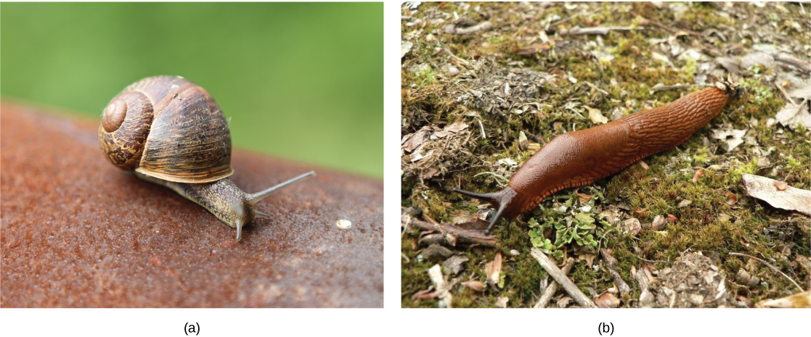
Gastropods ("stomach foot") include well-known mollusks like snails, slugs, conchs, sea hares, and sea butterflies. Gastropods include shell-bearing species as well as species with a reduced shell. These animals are asymmetrical and usually present a coiled shell (Figure 15.26).
The visceral mass in the shelled species is characteristically twisted and the foot is modified for crawling. Most gastropods bear a head with tentacles that support eyes. A complex radula is used to scrape food particles from the substrate. The mantle cavity encloses the ctenidia as well as a pair of nephridia.
The class Cephalopoda ("head foot" animals) includes octopuses, squids, cuttlefish, and nautilus. Cephalopods include shelled and reduced-shell groups. They display vivid coloration, typically seen in squids and octopuses, which is used for camouflage. The ability of some octopuses to rapidly adjust their colors to mimic a background pattern or to startle a predator is one of the more awe-inspiring feats of these animals. All animals in this class are predators and have beak-like jaws. All cephalopods have a well-developed nervous system, complex eyes, and a closed circulatory system. The foot is lobed and developed into tentacles and a funnel, which is used for locomotion. Suckers are present on the tentacles in octopuses and squid. Ctenidia are enclosed in a large mantle cavity and are serviced by large blood vessels, each with its own heart.
Cephalopods (Figure 15.27) are able to move quickly via jet propulsion by contracting the mantle cavity to forcefully eject a stream of water. Cephalopods have separate sexes, and the females of some species care for the eggs for an extended period of time. Although the shell is much reduced and internal in squid and cuttlefish, and absent altogether in octopus, nautilus live inside a spiral, multi-chambered shell that is filled with gas or water to regulate buoyancy.
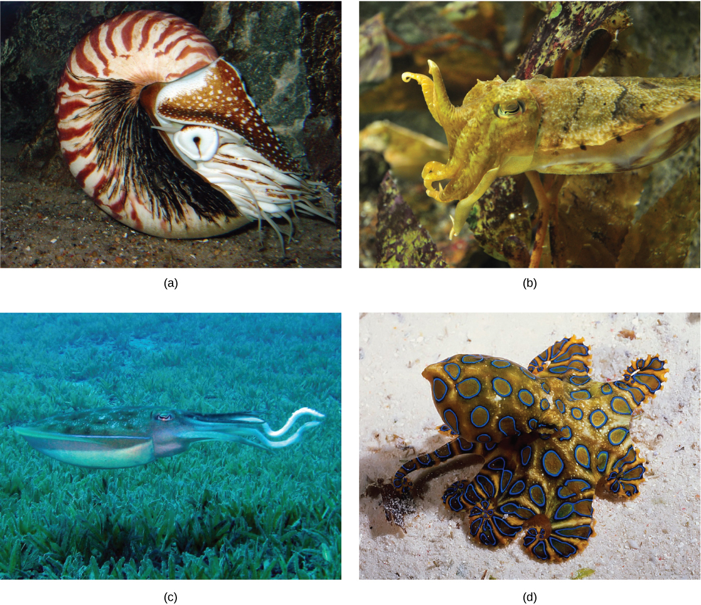
Members of the class Scaphopoda ("boat feet") are known colloquially as "tusk shells" or "tooth shells." Tooth shells are open at both ends and usually lie buried in sand with the front opening exposed to water and the reduced head end projecting from the back of the shell. Tooth shells have a radula and a foot modified into tentacles, each with a bulbous end that catches and manipulates prey (Figure 15.28).
Phylum Annelida are segmented worms found in marine, terrestrial, and freshwater habitats, but the presence of water or humidity is a critical factor for their survival in terrestrial habitats. The name of the phylum is derived from the Latin word annellus, which means a small ring. Approximately 16,500 species have been described. The phylum includes earthworms, polychaete worms, and leeches. Like mollusks, annelids exhibit protostomic development.
Annelids are bilaterally symmetrical and have a worm-like appearance. Their particular segmented body plan results in repetition of internal and external features in each body segment. This type of body plan is called metamerism. The evolutionary benefit of such a body plan is thought to be the capacity it allows for the evolution of independent modifications in different segments that perform different functions. The overall body can then be divided into head, body, and tail.
The skin of annelids is protected by a cuticle that is thinner than the cuticle of the ecdysozoans and does not need to be molted for growth. Chitinous hairlike extensions, anchored in the skin and projecting from the cuticle, called chaetae, are present in every segment in most groups. The chaetae are a defining character of annelids. Polychaete worms have paired, unjointed limbs called parapodia on each segment used for locomotion and breathing. Beneath the cuticle there are two layers of muscle, one running around its circumference (circular) and one running the length of the worm (longitudinal). Annelids have a true coelom in which organs are distributed and bathed in coelomic fluid. Annelids possess a well-developed complete digestive system with specialized organs: mouth, muscular pharynx, esophagus, and crop. A cross-sectional view of a body segment of an earthworm is shown in Figure 15.29; each segment is limited by a membrane that divides the body cavity into compartments.
Annelids have a closed circulatory system with muscular pumping "hearts" in the anterior segments, dorsal and ventral blood vessels that run the length of the body with connections in each segment, and capillaries that service individual tissues. Gas exchange occurs across the moist body surface. Excretion is carried out by pairs of primitive "kidneys" called metanephridia that consist of a convoluted tubule and an open, ciliated funnel present in every segment. Annelids have a well-developed nervous system with two ventral nerve cords and a nerve ring of fused ganglia present around the pharynx.
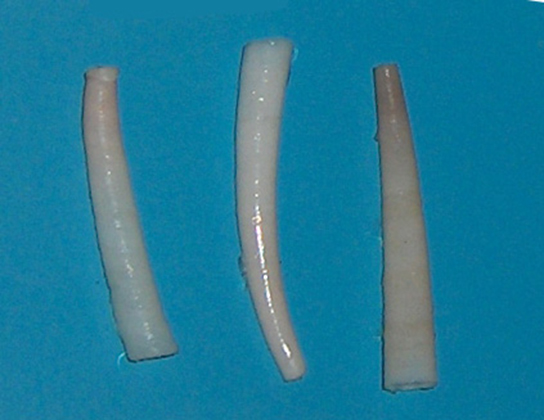
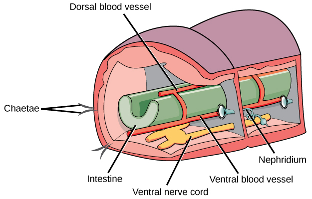
Annelids may be either monoecious with permanent gonads (as in earthworms and leeches) or dioecious with temporary or seasonal gonads (as in polychaetes).
Phylum Annelida includes the classes Polychaeta and Clitellata (Figure 15.30); the latter contains subclasses Oligochaeta, Hirudinoidea, and Branchiobdellida.
Earthworms are the most abundant members of the subclass Oligochaeta, distinguished by the presence of the clitellum, a ring structure in the skin that secretes mucus to bind mating individuals and forms a protective cocoon for the eggs. They also have a few, reduced chaetae (oligo- = "few"; -chaetae = "hairs"). The number and size of chaetae is greatly diminished in oligochaetes as compared to the polychaetes (poly- = "many"; -chaetae = "hairs"). The chaetae of polychaetes are also arranged within fleshy, flat, paired appendages on each segment called parapodia.
The subclass Hirudinoidea includes leeches. Significant differences between leeches and other annelids include the development of suckers at the anterior and posterior ends, and the absence of chaetae. Additionally, the segmentation of the body wall may not correspond to internal segmentation of the coelomic cavity. This adaptation may allow leeches to swell when ingesting blood from host vertebrates. The subclass Branchiobdellida includes about 150 species that show similarity to leeches as well as oligochaetes. All species are obligate symbionts, meaning that they can only survive associated with their host, mainly with freshwater crayfish. They feed on the algae that grows on the carapace of the crayfish.
Describe the key anatomical features shared by most mollusks (foot, visceral mass, mantle, radula). Compare the circulatory systems of most mollusks with those of cephalopods. Explain how the segmented body plan (metamerism) of annelids provides an evolutionary advantage.
- Describe the distinguishing characteristics of echinoderms
- Describe the distinguishing characteristics of chordates
Echinodermata are named for their spiny skin (from the Greek "echinos" meaning "spiny" and "dermos" meaning "skin"). The phylum includes about 7,000 described living species, such as sea stars, sea cucumbers, sea urchins, sand dollars, and brittle stars. Echinodermata are exclusively marine.
Adult echinoderms exhibit pentaradial symmetry and have a calcareous endoskeleton made of ossicles (Figure 15.31), although the early larval stages of all echinoderms have bilateral symmetry. The endoskeleton is developed by epidermal cells, which may also possess pigment cells, giving vivid colors to these animals, as well as cells laden with toxins. These animals have a true coelom, a portion of which is modified into a unique circulatory system called a water vascular system. An interesting feature of these animals is their power to regenerate, even when over 75 percent of their body mass is lost.
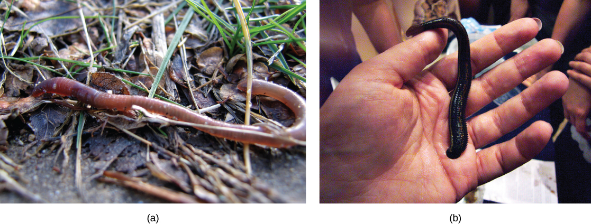
Echinoderms have a unique system for gas exchange, nutrient circulation, and locomotion called the water vascular system. The system consists of a central ring canal and radial canals extending along each arm. Water circulates through these structures allowing for gas, nutrient, and waste exchange. A structure on top of the body, called the madreporite, regulates the amount of water in the water vascular system. "Tube feet," which protrude through openings in the endoskeleton, may be expanded or contracted using the hydrostatic pressure in the system. The system allows for slow movement, but a great deal of power, as witnessed when the tube feet latch on to opposite halves of a bivalve mollusk, like a clam, and slowly, but surely pull the shells apart, exposing the flesh within.
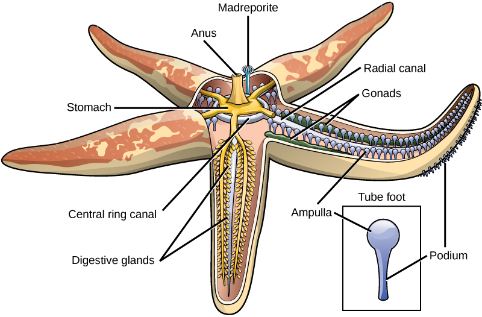
The echinoderm nervous system has a nerve ring at the center and five radial nerves extending outward along the arms. There is no centralized nervous control. Echinoderms have separate sexes and release their gametes into the water where fertilization takes place. Echinoderms may also reproduce asexually through regeneration from body parts.
This phylum is divided into five classes: Asteroidea (sea stars), Ophiuroidea (brittle stars), Echinoidea (sea urchins and sand dollars), Crinoidea (sea lilies or feather stars), and Holothuroidea (sea cucumbers) (Figure 15.32).
Perhaps the best-known echinoderms are members of the class Asteroidea, or sea stars. They come in a large variety of shapes, colors, and sizes, with more than 1,800 species known. The characteristics of sea stars that set them apart from other echinoderm classes include thick arms that extend from a central disk where organs penetrate into the arms. Sea stars use their tube feet not only for gripping surfaces but also for grasping prey. Sea stars have two stomachs, one of which they can evert through their mouths to secrete digestive juices into or onto prey before ingestion. This process can essentially liquefy the prey and make digestion easier.
Brittle stars have long, thin arms that do not contain any organs. Sea urchins and sand dollars do not have arms but are hemispherical or flattened with five rows of tube feet, which help them in slow movement. Sea lilies and feather stars are stalked suspension feeders. Sea cucumbers are soft-bodied and elongate with five rows of tube feet and a series of tube feet around the mouth that are modified into tentacles used in feeding.
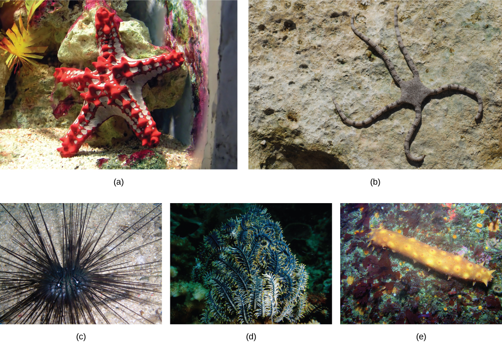
The majority of species in the phylum Chordata are found in the subphylum Vertebrata, which include many species with which we are familiar. The vertebrates contain more than 60,000 described species, divided into major groupings of the lampreys, fishes, amphibians, reptiles, birds, and mammals.
Animals in the phylum Chordata share four key features that appear at some stage of their development: a notochord, a dorsal hollow nerve cord, pharyngeal slits, and a post-anal tail (Figure 15.33). In certain groups, some of these traits are present only during embryonic development.
The chordates are named for the notochord, which is a flexible, rod-shaped structure that is found in the embryonic stage of all chordates and in the adult stage of some chordate species. It is located between the digestive tube and the nerve cord, and provides skeletal support through the length of the body. In some chordates, the notochord acts as the primary axial support of the body throughout the animal's lifetime. In vertebrates, the notochord is present during embryonic development, at which time it induces the development of the neural tube and serves as a support for the developing embryonic body. The notochord, however, is not found in the postnatal stage of vertebrates; at this point, it has been replaced by the vertebral column (the spine).
The dorsal hollow nerve cord is derived from ectoderm that sinks below the surface of the skin and rolls into a hollow tube during development. In chordates, it is located dorsally to the notochord. In contrast, other animal phyla possess solid nerve cords that are located either ventrally or laterally. The nerve cord found in most chordate embryos develops into the brain and spinal cord, which compose the central nervous system.
Pharyngeal slits are openings in the pharynx, the region just posterior to the mouth, that extend to the outside environment. In organisms that live in aquatic environments, pharyngeal slits allow for the exit of water that enters the mouth during feeding. Some invertebrate chordates use the pharyngeal slits to filter food from the water that enters the mouth. In fishes, the pharyngeal slits are modified into gill supports, and in jawed fishes, jaw supports. In tetrapods, the slits are further modified into components of the ear and tonsils, since there is no longer any need for gill supports in these air-breathing animals. Tetrapod means "four-footed," and this group includes amphibians, reptiles, birds, and mammals. (Birds are considered tetrapods because they evolved from tetrapod ancestors.)
The post-anal tail is a posterior elongation of the body extending beyond the anus. The tail contains skeletal elements and muscles, which provide a source of locomotion in aquatic species, such as fishes. In some terrestrial vertebrates, the tail may also function in balance, locomotion, courting, and signaling when danger is near. In many species, the tail is absent or reduced; for example, in apes, including humans, it is present in the embryo, but reduced in size and nonfunctional in adults.
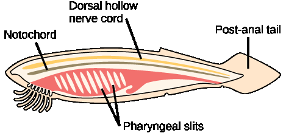
Which of the following statements about common features of chordates is true?
a. The dorsal hollow nerve cord is part of the chordate central nervous system.
b. In vertebrate fishes, the pharyngeal slits become the gills.
c. Humans are not chordates because humans do not have a tail.
d. Vertebrates do not have a notochord at any point in their development; instead, they have a vertebral column.
In addition to the vertebrates, the phylum Chordata contains two clades of invertebrates: Urochordata (tunicates) and Cephalochordata (lancelets). Members of these groups possess the four distinctive features of chordates at some point during their development.
The tunicates (Figure 15.34) are also called sea squirts. The name tunicate derives from the cellulose-like carbohydrate material, called the tunic, which covers the outer body. Although tunicates are classified as chordates, the adult forms are much modified in body plan and do not have a notochord, a dorsal hollow nerve cord, or a post-anal tail, although they do have pharyngeal slits. The larval form possesses all four structures. Most tunicates are hermaphrodites. Tunicate larvae hatch from eggs inside the adult tunicate's body. After hatching, a tunicate larva swims for a few days until it finds a suitable surface on which it can attach, usually in a dark or shaded location. It then attaches by the head to the substrate and undergoes metamorphosis into the adult form, at which point the notochord, nerve cord, and tail disappear.
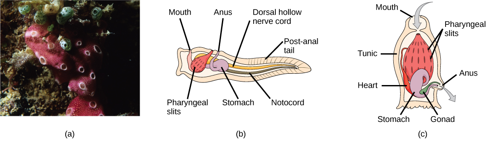
Most tunicates live a sessile existence in shallow ocean waters and are suspension feeders. The primary foods of tunicates are plankton and detritus. Seawater enters the tunicate's body through its incurrent siphon. Suspended material is filtered out of this water by a mucus net (pharyngeal slits) and is passed into the intestine through the action of cilia. The anus empties into the excurrent siphon, which expels wastes and water.
Lancelets possess a notochord, dorsal hollow nerve cord, pharyngeal slits, and a post-anal tail in the adult stage (Figure 15.35). The notochord extends into the head, which gives the subphylum its name (Cephalochordata). Extinct fossils of this subphylum date to the middle of the Cambrian period (540–488 mya). The living forms, the lancelets, are named for their blade-like shape. Lancelets are only a few centimeters long and are usually found buried in sand at the bottom of warm temperate and tropical seas. Like tunicates, they are suspension feeders.
Describe how the water vascular system works in echinoderms, including the roles of the madreporite, ring canal, and tube feet. List and explain the four key features shared by all chordates. Compare tunicates and lancelets — which chordate features do adults of each group retain?
- Describe the difference between jawless and jawed fishes
- Explain the main characteristics of amphibians, reptiles, and birds
- Describe the derived characteristics in birds that facilitate flight
- Name and describe the distinguishing features of the three main groups of mammals
- Describe the derived features that distinguish primates from other animals
Vertebrates are among the most recognizable organisms of the animal kingdom (Figure 15.36). More than 62,000 vertebrate species have been identified. The vertebrate species now living represent only a small portion of the vertebrates that have existed. The best-known extinct vertebrates are the dinosaurs, a unique group of reptiles, reaching sizes not seen before or since in terrestrial animals. They were the dominant terrestrial animals for 150 million years, until they died out near the end of the Cretaceous period in a mass extinction. A great deal is known about the anatomy of the dinosaurs, given the preservation of their skeletal elements in the fossil record.
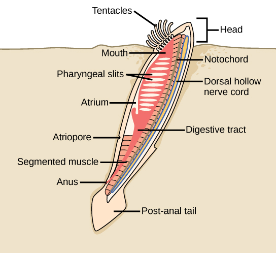
Modern fishes include an estimated 31,000 species. Fishes were the earliest vertebrates, and jawless fishes were the earliest of these. Jawless fishes—the present day hagfishes and lampreys—have a distinct cranium and complex sense organs including eyes, distinguishing them from the invertebrate chordates. The jawed fishes evolved later and are extraordinarily diverse today. Fishes are active feeders, rather than sessile, suspension feeders.
Jawless fishes are craniates (which includes all the chordate groups except the tunicates and lancelets) that represent an ancient vertebrate lineage that arose over one half-billion years ago. Some of the earliest jawless fishes were the ostracoderms (which translates as "shell-skin"). Ostracoderms, now extinct, were vertebrate fishes encased in bony armor, unlike present-day jawless fishes, which lack bone in their scales.
The clade Myxini includes 67 species of hagfishes. Hagfishes are eel-like scavengers that live on the ocean floor and feed on dead invertebrates, other fishes, and marine mammals (Figure 15.37a). Hagfishes are entirely marine and are found in oceans around the world except for the polar regions. A unique feature of these animals is the slime glands beneath the skin that are able to release an extraordinary amount of mucus through surface pores. This mucus may allow the hagfish to escape from the grip of predators. Hagfish are known to enter the bodies of dead or dying organisms to devour them from the inside.
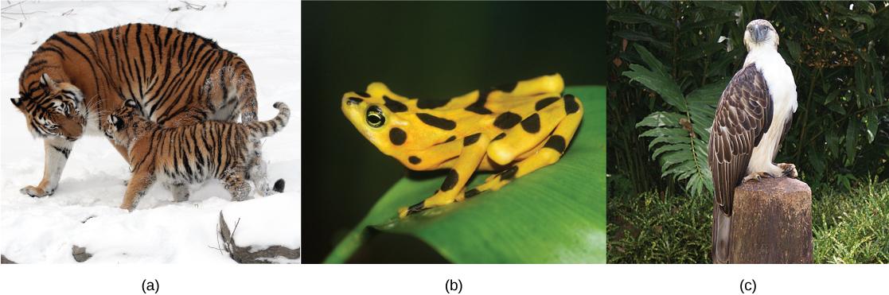
The skeleton of a hagfish is composed of cartilage, which includes a cartilaginous notochord, which runs the length of the body, and a skull. This notochord provides support to the fish's body. Although they are craniates, hagfishes are not vertebrates, since they do not replace the notochord with a vertebral column during development, as do the vertebrates.
The clade Petromyzontidae includes approximately 40 species of lampreys. Lampreys are similar to hagfishes in size and shape; however, lampreys have a brain case and incomplete vertebrae. Lampreys lack paired appendages and bone, as do the hagfishes. As adults, lampreys are characterized by a toothed, funnel-like sucking mouth. Some species are parasitic as adults, attaching to and feeding on the body fluids of fish (Figure 15.37b). Most species are free-living.
Lampreys live primarily in coastal and fresh waters and have a worldwide temperate region distribution. All species spawn in fresh waters. Eggs are fertilized externally, and the larvae are distinctly different from the adult form, spending 3 to 15 years as suspension feeders. Once they attain sexual maturity, the adults reproduce and die within days. Lampreys have a notochord as adults.
Gnathostomes or "jaw-mouths" are vertebrates that have jaws and include both cartilaginous and bony fishes. One of the most significant developments in early vertebrate evolution was the origin of the jaw, which is a hinged structure attached to the cranium that allows an animal to grasp and tear its food. The evolution of jaws allowed early gnathostomes to exploit food resources that were unavailable to jawless fishes.
The clade Chondrichthyes, the cartilaginous fishes, is diverse, consisting of sharks (Figure 15.38a), rays, and skates, together with sawfishes and a few dozen species of fishes called chimaeras, or ghost sharks. Chondrichthyes have paired fins and a skeleton made of cartilage. This clade arose approximately 370 million years ago in the middle Devonian. They are thought to have descended from an extinct group that had a skeleton made of bone; thus, the cartilaginous skeleton of Chondrichthyes is a later development. Parts of the shark skeleton are strengthened by granules of calcium carbonate, but this is not the same as bone.
Most cartilaginous fishes live in marine habitats, with a few species living in fresh water for some or all of their lives. Most sharks are carnivores that feed on live prey, either swallowing it whole or using their jaws and teeth to tear it into smaller pieces. Shark teeth likely evolved from the jagged scales that cover their skin. Some species of sharks and rays are suspension feeders that feed on plankton.
Sharks have well-developed sense organs that aid them in locating prey, including a keen sense of smell and electroreception, the latter being perhaps the most sensitive of any animal. Organs called ampullae of Lorenzini allow sharks to detect the electromagnetic fields that are produced by all living things, including their prey. Electroreception has only been observed in aquatic or amphibious animals. Sharks, together with most fishes, also have a sense organ called the lateral line, which is used to detect movement and vibration in the surrounding water, and a sense that is often considered homologous to "hearing" in terrestrial vertebrates. The lateral line is visible as a darker stripe that runs along the length of the fish's body.
Sharks reproduce sexually and eggs are fertilized internally. Most species are ovoviviparous, that is, the fertilized egg is retained in the oviduct of the mother's body, and the embryo is nourished by the egg yolk. The eggs hatch in the uterus and young are born alive and fully functional. Some species of sharks are oviparous: They lay eggs that hatch outside of the mother's body. Embryos are protected by a shark egg case or "mermaid's purse" that has the consistency of leather. The shark egg case has tentacles that snag in seaweed and give the newborn shark cover. A few species of sharks are viviparous, that is, the young develop within the mother's body, and she gives live birth.
Rays and skates include more than 500 species and are closely related to sharks. They can be distinguished from sharks by their flattened bodies, pectoral fins that are enlarged and fused to the head, and gill slits on their ventral surface (Figure 15.38b). Like sharks, rays and skates have a cartilaginous skeleton. Most species are marine and live on the sea floor, with nearly a worldwide distribution.
Members of the clade Osteichthyes, or bony fishes, are characterized by a bony skeleton. The vast majority of present-day fishes belong to this group, which consists of approximately 30,000 species, making it the largest class of vertebrates in existence today.
Nearly all bony fishes have an ossified skeleton with specialized bone cells (osteocytes) that produce and maintain a calcium phosphate matrix. This characteristic has only reverted in a few groups of Osteichthyes, such as sturgeons and paddlefish, which have primarily cartilaginous skeletons. The skin of bony fishes is often covered in overlapping scales, and glands in the skin secrete mucus that reduces drag when swimming and aids the fish in osmoregulation. Like sharks, bony fishes have a lateral line system that detects vibrations in water. Unlike sharks, some bony fish depend on their eyesight to locate prey. Bony fish are also unusual in possessing taste cells in the head and trunk region of the body that allow them to detect extremely small concentrations of molecules in the water.
All bony fishes, like the cartilaginous fishes, use gills to breathe. Water is drawn over gills that are located in chambers covered and ventilated by a protective, muscular flap called the operculum. Unlike sharks, bony fishes have a swim bladder, a gas-filled organ that helps to control the buoyancy of the fish. Bony fishes are further divided into two clades with living members: Actinopterygii (ray-finned fishes) and Sarcopterygii (lobe-finned fishes).
The ray-finned fishes include many familiar fishes—tuna, bass, trout, and salmon (Figure 15.39a), among others. Ray-finned fishes are named for the form of their fins—webs of skin supported by bony spines called rays. In contrast, the fins of lobe-finned fishes are fleshy and supported by bone (Figure 15.39b). Living members of lobe-finned fishes include the less familiar lungfishes and coelacanth.
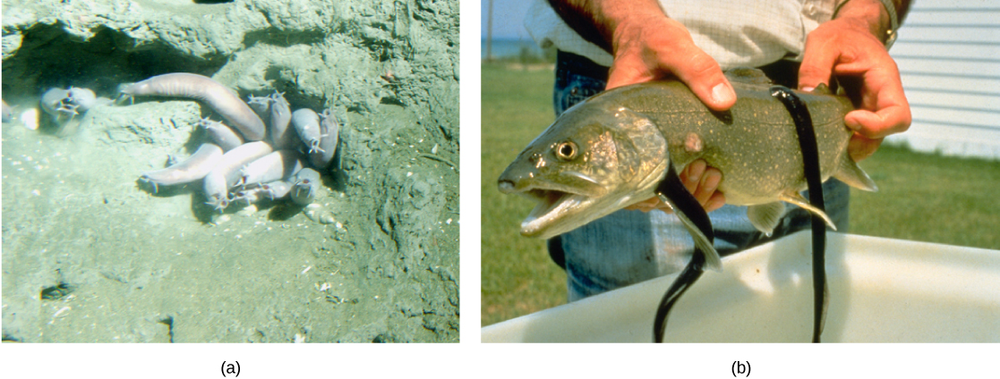
Amphibians are vertebrate tetrapods. Amphibia includes frogs, salamanders, and caecilians. The term amphibian means "dual life," which is a reference to the metamorphosis that many frogs undergo from a tadpole to an adult and the mixture of aquatic and terrestrial environments in their life cycle. Amphibians evolved in the Devonian period and were the earliest terrestrial tetrapods.
As tetrapods, most amphibians are characterized by four well-developed limbs, although some species of salamanders and all caecilians possess only vestigial limbs. An important characteristic of extant amphibians is a moist, permeable skin, achieved by mucus glands. The moist skin allows oxygen and carbon dioxide exchange with the environment, a process called cutaneous respiration. All living adult amphibian species are carnivorous, and some terrestrial amphibians have a sticky tongue that is used to capture prey.
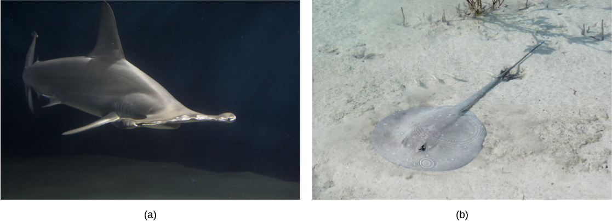
Amphibia comprise an estimated 6,500 extant species that inhabit tropical and temperate regions around the world. Amphibians can be divided into three clades: Urodela ("tailed-ones"), the salamanders and newts; Anura ("tail-less ones"), the frogs and toads; and Apoda ("legless ones"), the caecilians.
Living salamanders (Figure 15.40a) include approximately 500 species, some of which are aquatic, others terrestrial, and some that live on land only as adults. Adult salamanders usually have a generalized tetrapod body plan with four limbs and a tail. Some salamanders are lungless, and respiration occurs through the skin or external gills. Some terrestrial salamanders have primitive lungs; a few species have both gills and lungs.
Frogs (Figure 15.40b) are the most diverse group of amphibians, with approximately 5,000 species that live on all continents except Antarctica. Frogs have a body plan that is more specialized than the salamander body plan for movement on land. Adult frogs use their hind limbs to jump many times their body length on land. Frogs have a number of modifications that allow them to avoid predators, including skin that acts as camouflage and defensive chemicals that are poisonous to predators secreted from glands in the skin.
Frog eggs are fertilized externally, as they are laid in moist environments. Frogs demonstrate a range of parental behaviors, with some species exhibiting little care, to species that carry eggs and tadpoles on their hind legs or backs. The life cycle consists of two stages: the larval stage followed by metamorphosis to an adult stage. The larval stage of a frog, the tadpole, is often a filter-feeding herbivore. Tadpoles usually have gills, a lateral line system, long-finned tails, but no limbs. At the end of the tadpole stage, frogs undergo a gradual metamorphosis into the adult form. During this stage, the gills and lateral line system disappear, and four limbs develop. The jaws become larger and are suited for carnivorous feeding, and the digestive system transforms into the typical short gut of a predator. An eardrum and air-breathing lungs also develop. These changes during metamorphosis allow the larvae to move onto land in the adult stage (Figure 15.41).
Caecilians comprise an estimated 185 species. They lack external limbs and resemble giant earthworms. They inhabit soil and are found primarily in the tropics of South America, Africa, and southern Asia where they are adapted for a soil-burrowing lifestyle and are nearly blind. Unlike most of the other amphibians that breed in or near water, reproduction in a drier soil habitat means that caecilians must utilize internal fertilization, and most species give birth to live young (Figure 15.42).
The amniotes—reptiles, birds, and mammals—are distinguished from amphibians by their terrestrially adapted (shelled) egg and an embryo protected by amniotic membranes. The evolution of amniotic membranes meant that the embryos of amniotes could develop within an aquatic environment inside the egg. This led to less dependence on a water environment for development and allowed the amniotes to invade drier areas. This was a significant evolutionary change that distinguished them from amphibians, which were restricted to moist environments due to their shell-less eggs. Although the shells of various amniotic species vary significantly, they all allow retention of water. The membranes of the amniotic egg also allowed gas exchange and sequestering of wastes within the enclosure of an eggshell. The shells of bird eggs are composed of calcium carbonate and are hard and brittle, but possess pores for gas and water exchange. The shells of reptile eggs are more leathery and pliable. Most mammals do not lay eggs; however, even with internal gestation, amniotic membranes are still present.
In the past, the most common division of amniotes has been into classes Mammalia, Reptilia, and Aves. Birds are descended, however, from dinosaurs, so this classical scheme results in groups that are not true clades. We will discuss birds as a group distinct from reptiles with the understanding that this does not reflect evolutionary history.
Reptiles are tetrapods. Limbless reptiles—snakes—may have vestigial limbs and, like caecilians, are classified as tetrapods because they are descended from four-limbed ancestors. Reptiles lay shelled eggs on land. Even aquatic reptiles, like sea turtles, return to the land to lay eggs. They usually reproduce sexually with internal fertilization. Some species display ovoviviparity, with the eggs remaining in the mother's body until they are ready to hatch. Other species are viviparous, with the offspring born alive.
One of the key adaptations that permitted reptiles to live on land was the development of their scaly skin, containing the protein keratin and waxy lipids, which prevented water loss from the skin. This occlusive skin means that reptiles cannot use their skin for respiration, like amphibians, and thus all must breathe with lungs. In addition, reptiles conserve valuable body water by excreting nitrogen in the form of uric acid paste. These characteristics, along with the shelled, amniotic egg, were the major reasons why reptiles became so successful in colonizing a variety of terrestrial habitats far from water.
Reptiles are ectotherms, that is, animals whose main source of body heat comes from the environment. Behavioral maneuvers, like basking to heat themselves, or seeking shade or burrows to cool off, help them regulate their body temperature,
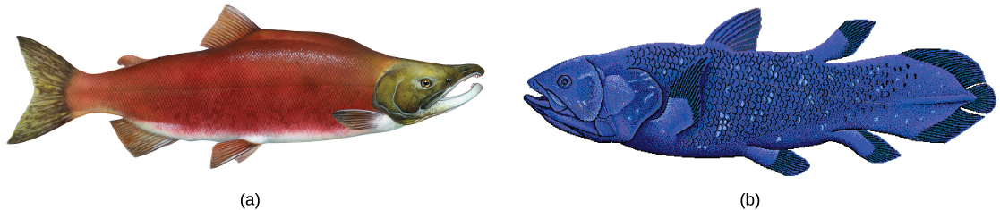
Class Reptilia includes diverse species classified into four living clades. These are the Crocodilia, Sphenodontia, Squamata, and Testudines.
The Crocodilia ("small lizard") arose approximately 84 million years ago, and living species include alligators, crocodiles, and caimans. Crocodilians (Figure 15.43a) live throughout the tropics of Africa, South America, the southeastern United States, Asia, and Australia. They are found in freshwater habitats, such as rivers and lakes, and spend most of their time in water. Some species are able to move on land due to their semi-erect posture.
The Sphenodontia ("wedge tooth") arose in the Mesozoic Era and includes only one living genus, Tuatara, with two species that are found in New Zealand. There are many fossil species extending back to the Triassic period (250–200 million years ago). Although the tuataras resemble lizards, they are anatomically distinct and share characteristics that are found in birds and turtles.
Squamata ("scaly") arose in the late Permian; living species include lizards and snakes, which are the largest extant clade of reptiles (Figure 15.43b). Lizards differ from snakes by having four limbs, eyelids, and external ears, which are lacking in snakes. Lizard species range in size from chameleons and geckos that are a few centimeters in length to the Komodo dragon, which is about 3 meters in length.
Snakes are thought to have descended from either burrowing lizards or aquatic lizards over 100 million years ago (Figure 15.43c). Snakes comprise about 3,000 species and are found on every continent except Antarctica. They range in size from 10 centimeter-long thread snakes to 7.5 meter-long pythons and anacondas. All snakes are carnivorous and eat small animals, birds, eggs, fish, and insects.
Turtles are members of the clade Testudines ("having a shell") (Figure 15.43d). Turtles are characterized by a bony or cartilaginous shell, made up of the carapace on the back and the plastron on the ventral surface, which develops from the ribs. Turtles arose approximately 200 million years ago, predating crocodiles, lizards, and snakes. Turtles lay eggs on land, although many species live in or near water. Turtles range in size from the speckled padloper tortoise at 8 centimeters (3.1 inches) to the leatherback sea turtle at 200 centimeters (over 6 feet). The term "turtle" is sometimes used to describe only those species of Testudines that live in the sea, with the terms "tortoise" and "terrapin" used to refer to species that live on land and in fresh water, respectively.
Data now suggest that birds belong within the reptile clade, but they display a number of unique adaptations that set them apart. Unlike the reptiles, birds are endothermic, meaning they generate their own body heat through metabolic processes. The most distinctive characteristic of birds is their feathers, which are modified reptilian scales. Birds have several different types of feathers that are specialized for specific functions, like contour feathers that streamline the bird's exterior and loosely structured down feathers that insulate (Figure 15.44a).
Feathers not only permitted the earliest birds to glide, and ultimately engage in flapping flight, but they insulated the bird's body, assisting the maintenance of endothermy, even in cooler temperatures. Powering a flying animal requires economizing on the amount of weight carried. As body weight increases, the muscle output and energetic cost required for flying increase. Birds have made several modifications to reduce body weight, including hollow or pneumatic bones (Figure 15.44b) with air spaces that may be connected to air sacs and cross-linked struts within their bones to provide structural reinforcement. Parts of the vertebral skeleton and braincase are fused to increase its strength while lightening its weight. Most species of bird only possess one ovary rather than two, and no living birds have teeth in their jaw, further reducing body mass.
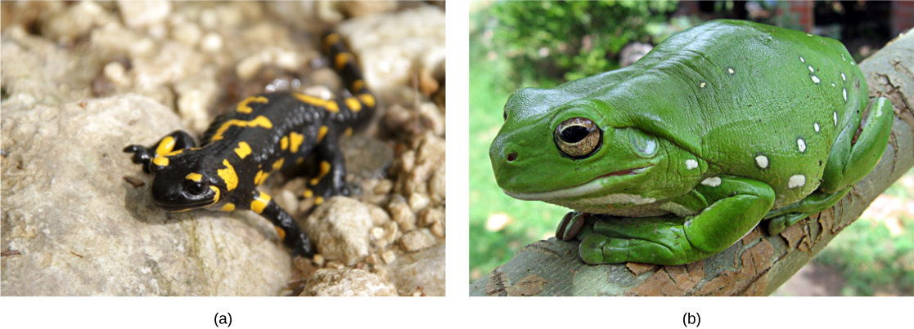
Birds possess a system of air sacs branching from their primary airway that divert the path of air so that it passes unidirectionally through the lung, during both inspiration and expiration. Unlike mammalian lungs in which air flows in two directions as it is breathed in and out, air flows continuously through the bird's lung to provide a more efficient system of gas exchange.
Mammals are vertebrates that have hair and mammary glands used to provide nutrition for their young. Certain features of the jaw, skeleton, skin, and internal anatomy are also unique to mammals. The presence of hair is one of the key characteristics of a mammal. Although it is not very extensive in some groups, such as whales, hair has many important functions for mammals. Mammals are endothermic, and hair provides insulation by trapping a layer of air close to the body to retain metabolic heat. Hair also serves as a sensory mechanism through specialized hairs called vibrissae, better known as whiskers. These attach to nerves that transmit touch information, which is particularly useful to nocturnal or burrowing mammals. Hair can also provide protective coloration.
Mammalian skin includes secretory glands with various functions. Sebaceous glands produce a lipid mixture called sebum that is secreted onto the hair and skin for water resistance and lubrication. Sebaceous glands are located over most of the body. Sudoriferous glands produce sweat and scent, which function in thermoregulation and communication, respectively. Mammary glands produce milk that is used to feed newborns. While male and female monotremes and eutherians possess mammary glands, some male marsupials do not.
The skeletal system of mammals possesses unique features that differentiate them from other vertebrates. Most mammals have heterodont teeth, meaning they have different types and shapes of teeth that allow them to feed on different kinds of foods. These different types of teeth include the incisors, the canines, premolars, and molars. The first two types are for cutting and tearing, whereas the latter two types are for crushing and grinding. Different groups have different proportions of each type, depending on their diet. Most mammals are also diphyodonts, meaning they have two sets of teeth in their lifetime: deciduous or "baby" teeth, and permanent teeth. In other vertebrates, the teeth can be replaced throughout life.
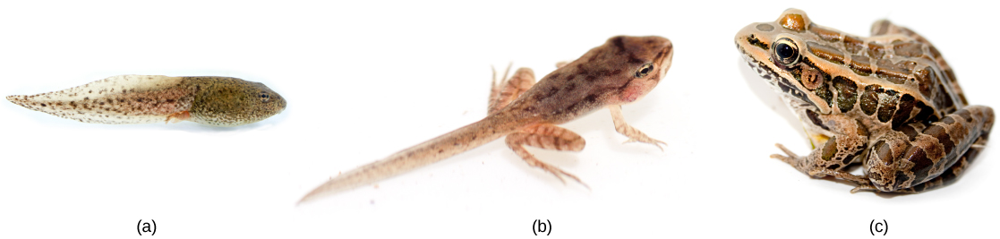
Modern mammals are divided into three broad groups: monotremes, marsupials, and eutherians (or placental mammals). The eutherians, or placental mammals, and the marsupials collectively are called therian mammals, whereas monotremes are called prototherians.
There are three living species of monotremes: the platypus and two species of echidnas, or spiny anteaters (Figure 15.45). The platypus and one species of echidna are found in Australia, whereas the other species of echidna is found in New Guinea. Monotremes are unique among mammals, as they lay leathery eggs, similar to those of reptiles, rather than giving birth to live young. However, the eggs are retained within the mother's reproductive tract until they are almost ready to hatch. Once the young hatch, the female begins to secrete milk from pores in a ridge of mammary tissue along the ventral side of her body. Like other mammals, monotremes are endothermic but regulate body temperatures somewhat lower (90 °F, 32 °C) than placental mammals do (98 °F, 37 °C). Like reptiles, monotremes have one posterior opening for urinary, fecal, and reproductive products, rather than three separate openings like placental mammals do. Adult monotremes lack teeth.
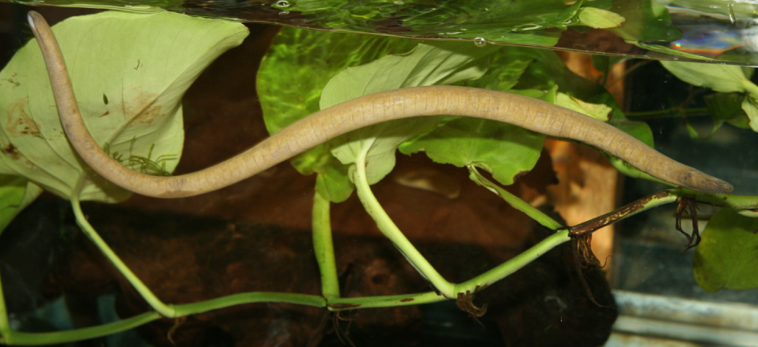
Marsupials are found primarily in Australia and nearby islands, although about 100 species of opossums and a few species of two other families are found in the Americas. Australian marsupials number over 230 species and include the kangaroo, koala, bandicoot, and Tasmanian devil (Figure 15.46). Most species of marsupials possess a pouch in which the young reside after birth, receiving milk and continuing to develop. Before birth, marsupials have a less complex placental connection, and the young are born much less developed than in placental mammals.
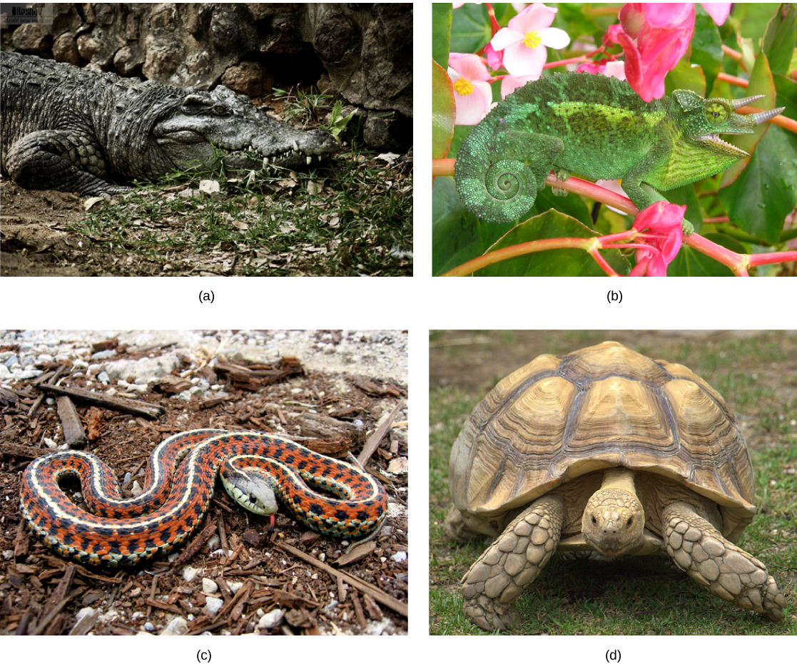
Eutherians are the most widespread of the mammals, occurring throughout the world. There are several groups of eutherians, including Insectivora, the insect eaters; Edentata, the toothless anteaters; Rodentia, the rodents; Chiroptera, the bats; Cetacea, the aquatic mammals including whales; Carnivora, carnivorous mammals including dogs, cats, and bears; and Primates, which includes humans. Eutherian mammals are sometimes called placental mammals, because all species have a complex placenta that connects a fetus to the mother, allowing for gas, fluid, waste, and nutrient exchange. While other mammals may possess a less complex placenta or briefly have a placenta, all eutherians have a complex placenta during gestation.
Order Primates of class Mammalia includes lemurs, tarsiers, monkeys, and the apes, which include humans. Non-human primates live primarily in tropical or subtropical regions of South America, Africa, and Asia. They range in size from the mouse lemur at 30 grams (1 ounce) to the mountain gorilla at 200 kilograms (441 pounds). The characteristics and evolution of primates are of particular interest to us as they allow us to understand the evolution of our own species.
All primate species have adaptations for climbing trees, as they all descended from tree-dwellers, although not all species are arboreal. This arboreal heritage of primates resulted in hands and feet that are adapted for brachiation, or climbing and swinging through trees. These adaptations include, but are not limited to 1) a rotating shoulder joint, 2) a big toe that is widely separated from the other toes and thumbs that are widely separated from fingers (except humans), which allow for gripping branches, and 3) stereoscopic vision, two overlapping visual fields, which allows for the depth perception necessary to gauge distance. Other characteristics of primates are brains that are larger than those of many other mammals, claws that have been modified into flattened nails, typically only one offspring per pregnancy, and a trend toward holding the body upright.
Order Primates is divided into two groups: prosimians and anthropoids. Prosimians include the bush babies of Africa, the lemurs of Madagascar, and the lorises, pottos, and tarsiers of Southeast Asia. Anthropoids include monkeys, lesser apes, and great apes (Figure 15.47). In general, prosimians tend to be nocturnal, smaller in size than anthropoids, and have relatively smaller brains compared to anthropoids.
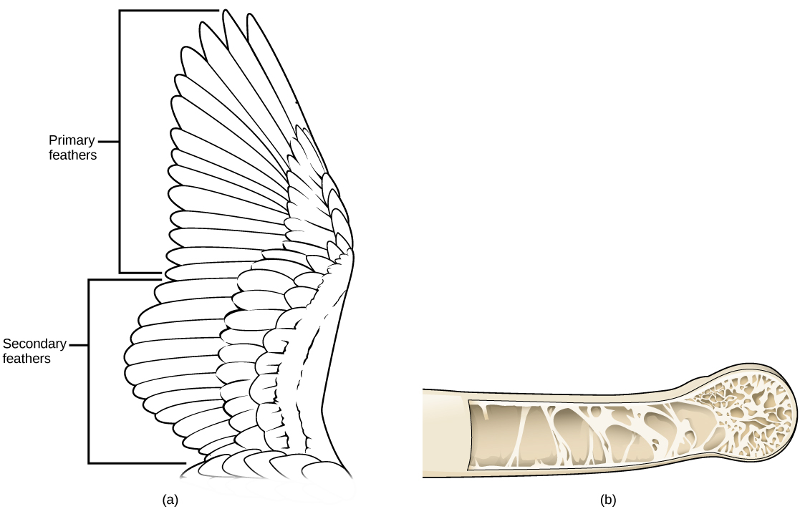
Compare jawless fishes (hagfish, lampreys) with jawed fishes (cartilaginous and bony). Describe how amphibians transitioned to land and what limits them to moist environments. Explain three adaptations that allow birds to fly. Name and distinguish the three groups of living mammals.
- Features of the Animal Kingdom (body plans, symmetry, germ layers, coelom, protostomes/deuterostomes) — CB 15.1
- Sponges and Cnidarians (Porifera, choanocytes, osculum, cnidocytes, polyp/medusa, coral) — CB 15.2
- Flatworms, Nematodes, and Arthropods (Platyhelminthes, Nematoda, Arthropoda, insects, exoskeleton) — CB 15.3
- Mollusks and Annelids (mantle, radula, gastropods, bivalves, cephalopods, segmentation, polychaetes, leeches) — CB 15.4
- Echinoderms and Chordates (water vascular system, tube feet, notochord, nerve cord, pharyngeal slits, tunicates, lancelets) — CB 15.5
- Vertebrates (jawless/jawed fishes, amphibians, reptiles, birds, mammals, monotremes, marsupials, eutherians, primates) — CB 15.6